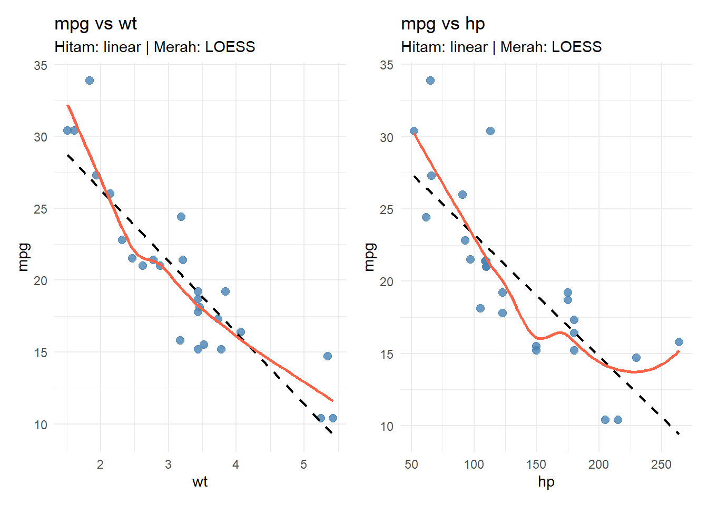
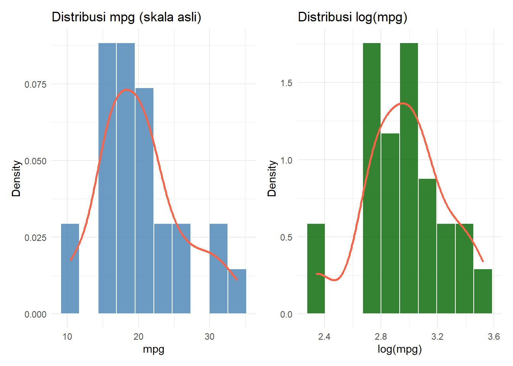
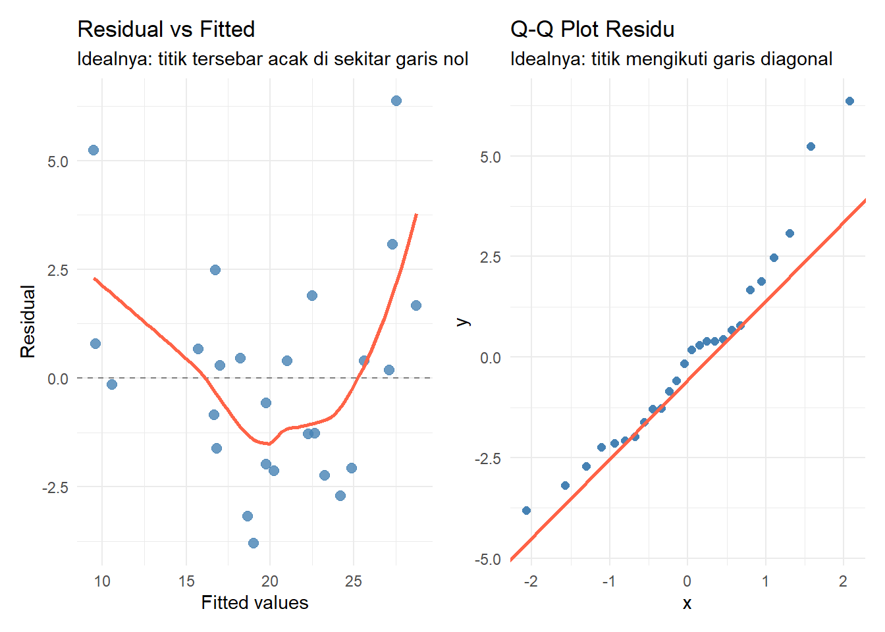
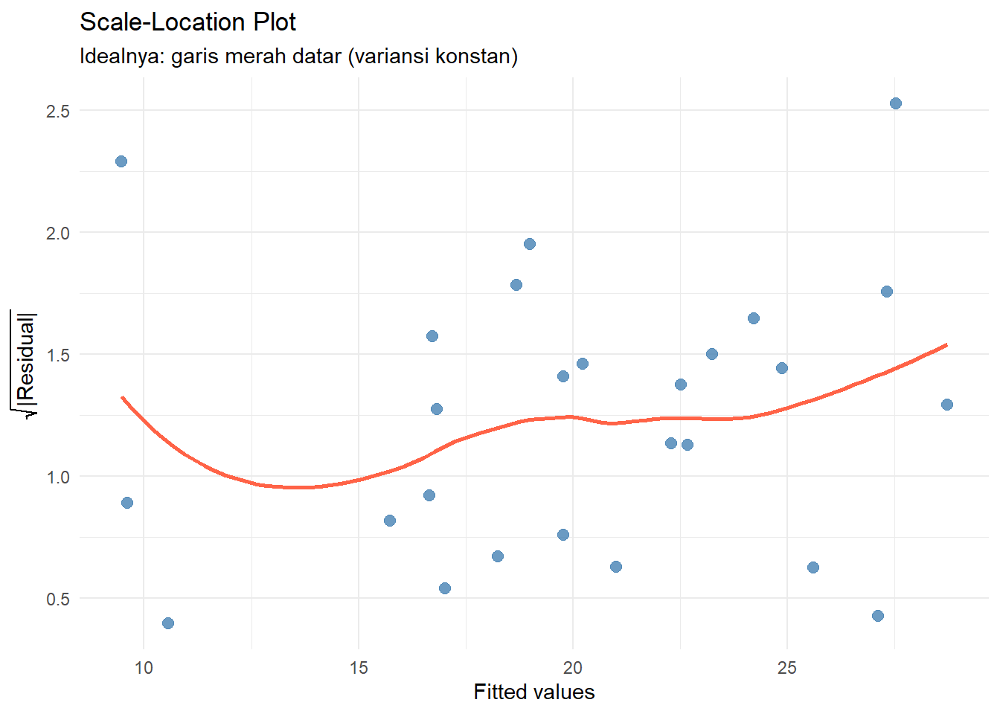
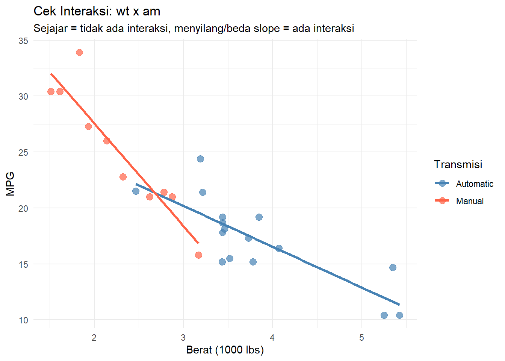
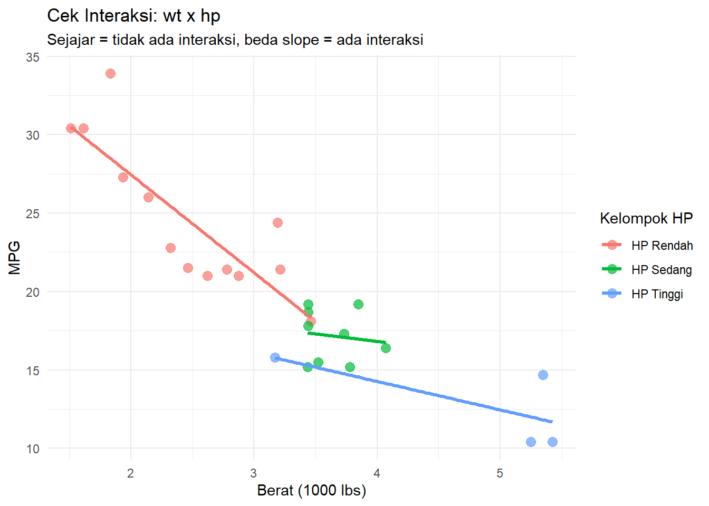
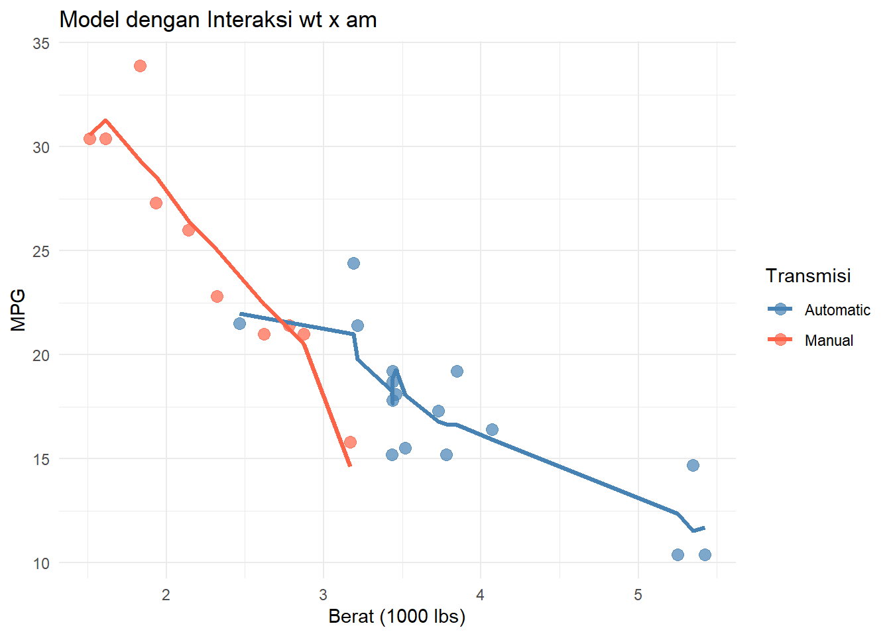
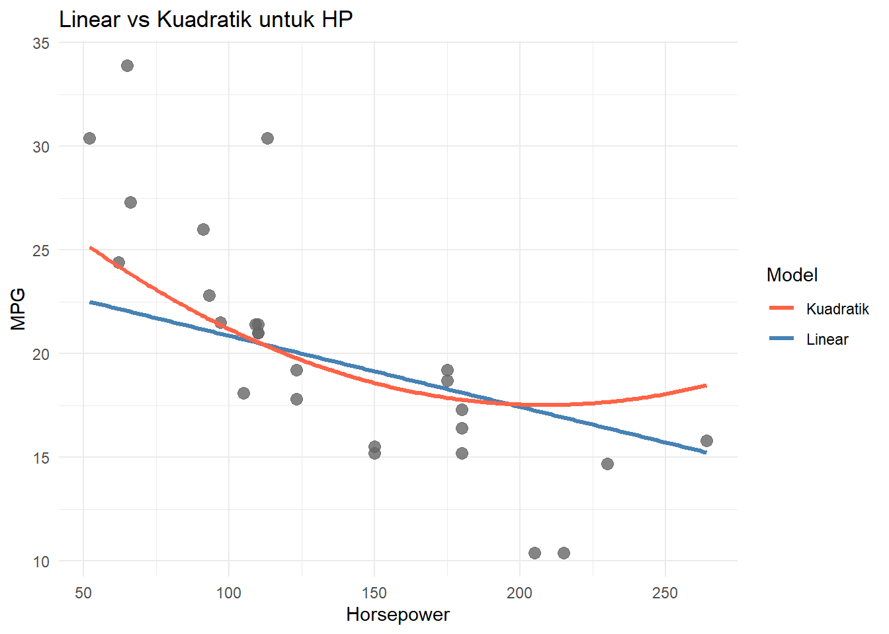

Hubungan antar variabel di dunia nyata jarang berbentuk garis lurus. Kadang ada lengkungan, kadang pengaruh satu variabel bergantung pada variabel lain, kadang variabelnya perlu ditransformasi dulu. Proses memilih dan membentuk variabel supaya model makin akurat inilah yang disebut model building (Mendenhall et al., 2011, Ch. 5).
Di modul ini kita akan belajar: menambahkan prediktor baru, suku interaksi, suku kuadratik, transformasi logaritma, dan membandingkan model.
Package yang Dipakai
Sebelum mulai, kita load dulu package yang dibutuhkan:
tidyverse: kumpulan package untuk data wrangling dan visualisasi. Di dalamnya ada ggplot2 (bikin grafik), dplyr (manipulasi data), tidyr (reshape data), dan lain-lain. Kita pakai terutama untuk ggplot2.
patchwork: package untuk menggabungkan beberapa plot ggplot2 jadi satu tampilan berdampingan. Tanpa ini, kita harus pakai par(mfrow=...) yang lebih ribet dan tidak kompatibel dengan ggplot2.
library(tidyverse)
── Attaching core tidyverse packages ──────────────────────── tidyverse 2.0.0 ──
✔ dplyr 1.2.0 ✔ readr 2.2.0
✔ forcats 1.0.1 ✔ stringr 1.6.0
✔ ggplot2 4.0.2 ✔ tibble 3.3.1
✔ lubridate 1.9.5 ✔ tidyr 1.3.2
✔ purrr 1.2.1
── Conflicts ────────────────────────────────────────── tidyverse_conflicts() ──
✖ dplyr::filter() masks stats::filter()
✖ dplyr::lag() masks stats::lag()
ℹ Use the conflicted package (<http://conflicted.r-lib.org/>) to force all conflicts to become errors
library(patchwork)
Warning: package 'patchwork' was built under R version 4.5.3
Data
Kita pakai dataset mtcars bawaan R, berisi data performa 32 model mobil. Yang mau diprediksi: mpg (konsumsi bahan bakar), menggunakan wt (berat), hp (tenaga mesin), dan am (transmisi: 0 = otomatis, 1 = manual).
Sebelum langsung bikin model macem-macem, intip dulu datanya lewat grafik. Tujuannya: tahu transformasi apa yang dibutuhkan.
Dua pertanyaan utama:
Hubungan prediktor ke respon itu linear atau melengkung? Kalau melengkung, coba suku kuadratik atau log prediktor.
Distribusi respon/residu bermasalah (skewed, variansi tidak merata)? Kalau iya, coba log pada respon.
Scatterplot: Prediktor vs Respon
p1 <-ggplot(data_train, aes(x = wt, y = mpg)) +geom_point(color ="steelblue", size =2.5, alpha =0.8) +geom_smooth(method ="lm", se =FALSE, color ="black", linetype ="dashed", linewidth =0.8) +geom_smooth(method ="loess", se =FALSE, color ="tomato", linewidth =1) +labs(title ="mpg vs wt", subtitle ="Hitam: linear | Merah: LOESS",x ="wt", y ="mpg") +theme_minimal()p2 <-ggplot(data_train, aes(x = hp, y = mpg)) +geom_point(color ="steelblue", size =2.5, alpha =0.8) +geom_smooth(method ="lm", se =FALSE, color ="black", linetype ="dashed", linewidth =0.8) +geom_smooth(method ="loess", se =FALSE, color ="tomato", linewidth =1) +labs(title ="mpg vs hp", subtitle ="Hitam: linear | Merah: LOESS",x ="hp", y ="mpg") +theme_minimal()p1 + p2
`geom_smooth()` using formula = 'y ~ x'
`geom_smooth()` using formula = 'y ~ x'
`geom_smooth()` using formula = 'y ~ x'
`geom_smooth()` using formula = 'y ~ x'

Kalau garis LOESS (merah) jauh melenceng dari garis linear (hitam putus-putus), hubungannya tidak linear. Pertimbangkan suku kuadratik atau log pada prediktor.
Distribusi Respon: Perlu Log atau Tidak?
Scatterplot di atas menjawab pertanyaan soal prediktor. Sekarang kita cek variabel responnya (mpg): apakah distribusinya normal atau condong ke satu sisi (skewed)? Kalau condong ke kanan, itu sinyal bahwa transformasi log(y) bisa membantu (Mendenhall et al., 2011, Sec. 8.4).
Kita bandingkan distribusi mpg asli vs log(mpg):
p3 <-ggplot(data_train, aes(x = mpg)) +geom_histogram(aes(y =after_stat(density)), bins =10,fill ="steelblue", color ="white", alpha =0.8) +geom_density(color ="tomato", linewidth =1) +labs(title ="Distribusi mpg (skala asli)", x ="mpg", y ="Density") +theme_minimal()p4 <-ggplot(data_train, aes(x =log(mpg))) +geom_histogram(aes(y =after_stat(density)), bins =10,fill ="darkgreen", color ="white", alpha =0.8) +geom_density(color ="tomato", linewidth =1) +labs(title ="Distribusi log(mpg)", x ="log(mpg)", y ="Density") +theme_minimal()p3 + p4

Kalau distribusi asli jelas condong ke kanan tapi versi log-nya lebih simetris (bentuk bel), itu petunjuk kuat untuk pakai log(y) sebagai respon.
Bisa juga dicek lewat Q-Q plot. Prinsipnya: kalau titik-titik mengikuti garis diagonal, distribusinya mendekati normal.
Bandingkan kedua Q-Q plot: pakai skala yang titik-titiknya lebih rapat ke garis diagonal. Kalau log(mpg) lebih rapat, berarti transformasi log layak dicoba.
Residual Plot: Model Awal
Setelah fit model pertama, cek residunya. Ini grafik paling penting karena bisa menangkap masalah yang tidak terlihat di scatterplot biasa.
model_cek <-lm(mpg ~ wt + hp, data = data_train)data_cek <-data.frame(fitted =fitted(model_cek),residual =residuals(model_cek))p7 <-ggplot(data_cek, aes(x = fitted, y = residual)) +geom_point(color ="steelblue", size =2.5, alpha =0.8) +geom_hline(yintercept =0, linetype ="dashed", color ="gray50") +geom_smooth(method ="loess", se =FALSE, color ="tomato", linewidth =1) +labs(title ="Residual vs Fitted",subtitle ="Idealnya: titik tersebar acak di sekitar garis nol",x ="Fitted values", y ="Residual") +theme_minimal()p8 <-ggplot(data_cek, aes(sample = residual)) +stat_qq(color ="steelblue", size =2) +stat_qq_line(color ="tomato", linewidth =1) +labs(title ="Q-Q Plot Residu",subtitle ="Idealnya: titik mengikuti garis diagonal") +theme_minimal()p7 + p8
`geom_smooth()` using formula = 'y ~ x'

Cara baca:
Residual vs Fitted: Pola melengkung berarti ada non-linearitas yang belum tertangkap. Bentuk “corong” (makin menyebar) menandakan heteroskedastisitas.
Q-Q Plot residu: Titik melenceng dari garis berarti residu tidak normal.
Scale-Location Plot: Variansi Konstan atau Tidak?
Plot ini lebih fokus untuk mendeteksi heteroskedastisitas. Sumbu-y-nya adalah \(\sqrt{|\text{residual}|}\), jadi kita bisa lihat apakah “sebaran” residu berubah-ubah seiring nilai prediksi naik.
data_cek$sqrt_abs_resid <-sqrt(abs(residuals(model_cek)))ggplot(data_cek, aes(x = fitted, y = sqrt_abs_resid)) +geom_point(color ="steelblue", size =2.5, alpha =0.8) +geom_smooth(method ="loess", se =FALSE, color ="tomato", linewidth =1) +labs(title ="Scale-Location Plot",subtitle ="Idealnya: garis merah datar (variansi konstan)",x ="Fitted values", y =expression(sqrt("|Residual|"))) +theme_minimal()
`geom_smooth()` using formula = 'y ~ x'

Kalau garis merah naik atau turun, variansi tidak konstan. Ini sinyal kuat untuk coba log(y) sebagai respon (Mendenhall et al., 2011, Sec. 8.4, Table 8.3).
Ringkasan Diagnostik
Yang terlihat di grafik
Solusi
Scatterplot melengkung
Tambah suku kuadratik \(x^2\) atau pakai \(\log(x)\)
Distribusi respon skewed ke kanan
Coba \(\log(y)\) sebagai respon
Residual vs Fitted berpola
Tambah suku kuadratik atau transformasi prediktor
Variansi residu tidak konstan
Coba \(\log(y)\) sebagai respon
Garis per kategori tidak sejajar
Tambah suku interaksi \(x_1 \cdot x_2\)
Cek Interaksi: Apakah Pengaruh Prediktor Bergantung pada Variabel Lain?
Grafik-grafik di atas fokus ke bentuk hubungan (linear/melengkung) dan distribusi respon. Tapi ada satu hal lagi yang perlu dicek: apakah ada interaksi antar prediktor?
Cara paling gampang: plot prediktor numerik vs respon, lalu pisahkan warnanya berdasarkan variabel kategorikal. Kalau garisnya kira-kira sejajar, interaksi kemungkinan tidak ada. Kalau garisnya menyilang atau kemiringannya jelas beda, itu tanda ada interaksi.
ggplot(data_train, aes(x = wt, y = mpg, color = am)) +geom_point(size =3, alpha =0.7) +geom_smooth(method ="lm", se =FALSE, linewidth =1.2) +scale_color_manual(values =c("Automatic"="steelblue", "Manual"="tomato")) +labs(title ="Cek Interaksi: wt x am",subtitle ="Sejajar = tidak ada interaksi, menyilang/beda slope = ada interaksi",x ="Berat (1000 lbs)", y ="MPG", color ="Transmisi") +theme_minimal()
`geom_smooth()` using formula = 'y ~ x'

Plot ini belum pakai model apapun, murni dari data mentah. Kita cuma fit garis linear sederhana per kategori am untuk melihat polanya. Kalau dari sini slopenya sudah kelihatan beda, itu alasan untuk memasukkan suku interaksi wt:am ke dalam model nanti.
Kalau dua-duanya numerik bagaimana?
Untuk cek interaksi antara dua variabel numerik (misalnya wt dan hp), caranya agak beda. Kita tidak bisa langsung pakai warna karena hp bukan kategori. Triknya: potong salah satu variabel jadi beberapa kelompok pakai cut(), lalu perlakukan kelompok itu seperti kategori.
data_train$hp_group <-cut(data_train$hp,breaks =3,labels =c("HP Rendah", "HP Sedang", "HP Tinggi"))ggplot(data_train, aes(x = wt, y = mpg, color = hp_group)) +geom_point(size =3, alpha =0.7) +geom_smooth(method ="lm", se =FALSE, linewidth =1.2) +labs(title ="Cek Interaksi: wt x hp",subtitle ="Sejajar = tidak ada interaksi, beda slope = ada interaksi",x ="Berat (1000 lbs)", y ="MPG", color ="Kelompok HP") +theme_minimal()
`geom_smooth()` using formula = 'y ~ x'

Logikanya sama: kalau garis per kelompok HP kira-kira sejajar, pengaruh wt terhadap mpg tidak tergantung level hp. Kalau slopenya beda (misalnya di HP tinggi garisnya lebih curam), itu tanda ada interaksi wt:hp yang perlu dimasukkan ke model.
Membangun Model
1. First-Order Model (Baseline)
Mulai dari yang paling sederhana: semua prediktor masuk secara linear, tanpa interaksi dan tanpa transformasi. Model ini jadi patokan (Mendenhall et al., 2011, Sec. 4.3).
model_1 <-lm(mpg ~ wt + hp + am, data = data_train)summary(model_1)
Call:
lm(formula = mpg ~ wt + hp + am, data = data_train)
Residuals:
Min 1Q Median 3Q Max
-3.3015 -1.8445 -0.1899 1.0186 6.0925
Coefficients:
Estimate Std. Error t value Pr(>|t|)
(Intercept) 34.11690 2.82782 12.065 3.58e-11 ***
wt -3.04951 1.06055 -2.875 0.00879 **
hp -0.03427 0.01521 -2.253 0.03457 *
amManual 1.51392 1.57162 0.963 0.34587
---
Signif. codes: 0 '***' 0.001 '**' 0.01 '*' 0.05 '.' 0.1 ' ' 1
Residual standard error: 2.545 on 22 degrees of freedom
Multiple R-squared: 0.8346, Adjusted R-squared: 0.812
F-statistic: 37 on 3 and 22 DF, p-value: 9.048e-09
2. Menambahkan Suku Interaksi
Kadang pengaruh suatu variabel terhadap respon bergantung pada variabel lain. Misalnya, pengaruh berat mobil (wt) terhadap mpg bisa berbeda antara mobil otomatis dan manual. Kalau begini, garisnya tidak sejajar, slopenya beda (Mendenhall et al., 2011, Sec. 4.10, 5.7).
Koefisien interaksi \(\beta_3\) artinya: perubahan slope \(x_1\) untuk setiap perubahan satu unit \(x_2\).
Di R, interaksi ditulis pakai : (interaksi saja) atau * (efek utama + interaksi).
model_2 <-lm(mpg ~ wt * am + hp, data = data_train)summary(model_2)
Call:
lm(formula = mpg ~ wt * am + hp, data = data_train)
Residuals:
Min 1Q Median 3Q Max
-3.0644 -1.2730 -0.2999 0.9106 4.5765
Coefficients:
Estimate Std. Error t value Pr(>|t|)
(Intercept) 30.54260 2.53782 12.035 6.9e-11 ***
wt -2.52789 0.88143 -2.868 0.00921 **
amManual 13.97742 3.84645 3.634 0.00155 **
hp -0.02397 0.01281 -1.871 0.07533 .
wt:amManual -4.90467 1.42646 -3.438 0.00247 **
---
Signif. codes: 0 '***' 0.001 '**' 0.01 '*' 0.05 '.' 0.1 ' ' 1
Residual standard error: 2.083 on 21 degrees of freedom
Multiple R-squared: 0.8942, Adjusted R-squared: 0.874
F-statistic: 44.35 on 4 and 21 DF, p-value: 5.964e-10
data_train$pred_m2 <-predict(model_2)ggplot(data_train, aes(x = wt, color = am)) +geom_point(aes(y = mpg), size =3, alpha =0.7) +geom_line(aes(y = pred_m2), linewidth =1.2) +scale_color_manual(values =c("Automatic"="steelblue", "Manual"="tomato")) +labs(title ="Model dengan Interaksi wt x am",x ="Berat (1000 lbs)", y ="MPG", color ="Transmisi") +theme_minimal()

Perhatikan plotnya: dua garis untuk Automatic dan Manual punya kemiringan (slope) yang berbeda. Itu efek dari interaksi. Tanpa interaksi, kedua garis akan sejajar karena pengaruh wt dianggap sama untuk semua jenis transmisi. Dengan interaksi, model mengizinkan pengaruh wt terhadap mpg berbeda tergantung tipe transmisi.
Secara konkret: kalau garis Manual turun lebih curam dari Automatic, artinya setiap penambahan berat pada mobil manual “lebih mahal” dari segi konsumsi bahan bakar dibanding mobil otomatis. Sebaliknya, kalau garis Manual lebih landai, mobil manual lebih tahan terhadap penambahan berat.
Koefisien wt:amManual di output summary() adalah perbedaan slope wt antara mobil manual dan otomatis. Jadi slope wt untuk manual = \(\hat\beta_{wt} + \hat\beta_{wt:amManual}\), sedangkan slope wt untuk otomatis cukup \(\hat\beta_{wt}\) saja.
3. Suku Kuadratik (Polynomial)
Kalau hubungan prediktor-respon melengkung, tambahkan suku \(x^2\) supaya model bisa mengikuti kurva. Mendenhall et al. (2011, Sec. 5.3) menjelaskan bahwa model polinomial orde-\(p\) punya \((p-1)\) titik balik, jadi model kuadratik punya satu lengkungan, kubik punya dua, dst.
\[E(y) = \beta_0 + \beta_1 x + \beta_2 x^2\]
Di R, suku kuadratik wajib dibungkus I(). Tanpa I(), operator ^ punya arti lain dalam sintaks formula R.
model_3 <-lm(mpg ~ wt + hp +I(hp^2) + am, data = data_train)summary(model_3)
Call:
lm(formula = mpg ~ wt + hp + I(hp^2) + am, data = data_train)
Residuals:
Min 1Q Median 3Q Max
-3.1599 -1.6508 -0.4248 1.0623 5.2448
Coefficients:
Estimate Std. Error t value Pr(>|t|)
(Intercept) 41.3156352 4.6342298 8.915 1.39e-08 ***
wt -3.1800770 1.0049549 -3.164 0.00467 **
hp -0.1299771 0.0523419 -2.483 0.02154 *
I(hp^2) 0.0003118 0.0001640 1.902 0.07102 .
amManual 0.3060487 1.6158229 0.189 0.85159
---
Signif. codes: 0 '***' 0.001 '**' 0.01 '*' 0.05 '.' 0.1 ' ' 1
Residual standard error: 2.406 on 21 degrees of freedom
Multiple R-squared: 0.8589, Adjusted R-squared: 0.832
F-statistic: 31.95 on 4 and 21 DF, p-value: 1.179e-08
Visualisasi linear vs kuadratik:
hp_seq <-data.frame(hp =seq(min(data_train$hp), max(data_train$hp), length.out =200),wt =mean(data_train$wt),am =factor("Automatic", levels =c("Automatic", "Manual")))hp_seq$pred_linear <-predict(model_1, newdata = hp_seq)hp_seq$pred_quadratic <-predict(model_3, newdata = hp_seq)ggplot(data_train, aes(x = hp, y = mpg)) +geom_point(color ="gray40", size =3, alpha =0.8) +geom_line(data = hp_seq, aes(y = pred_linear, color ="Linear"), linewidth =1.2) +geom_line(data = hp_seq, aes(y = pred_quadratic, color ="Kuadratik"), linewidth =1.2) +scale_color_manual(values =c("Linear"="steelblue", "Kuadratik"="tomato")) +labs(title ="Linear vs Kuadratik untuk HP",x ="Horsepower", y ="MPG", color ="Model") +theme_minimal()

4. Transformasi Log pada Prediktor
Kalau prediktor sangat condong ke kanan (right-skewed), atau hubungannya dengan respon lebih “masuk akal” dalam skala log, langsung tulis log() di formula.
model_4 <-lm(mpg ~ wt +log(hp) + am, data = data_train)summary(model_4)
Call:
lm(formula = mpg ~ wt + log(hp) + am, data = data_train)
Residuals:
Min 1Q Median 3Q Max
-2.9383 -1.6200 -0.4743 0.9789 5.4518
Coefficients:
Estimate Std. Error t value Pr(>|t|)
(Intercept) 55.2230 6.8414 8.072 5.09e-08 ***
wt -2.8173 0.9257 -3.043 0.00596 **
log(hp) -5.4698 1.7809 -3.071 0.00559 **
amManual 1.2282 1.4064 0.873 0.39196
---
Signif. codes: 0 '***' 0.001 '**' 0.01 '*' 0.05 '.' 0.1 ' ' 1
Residual standard error: 2.362 on 22 degrees of freedom
Multiple R-squared: 0.8575, Adjusted R-squared: 0.8381
F-statistic: 44.13 on 3 and 22 DF, p-value: 1.774e-09
Interpretasi: karena prediktornya log(hp), kenaikan hp sebesar 1% diestimasi mengubah mpg sebesar \(\hat\beta_{\log(hp)} / 100\) satuan.
5. Transformasi Log pada Respon (Multiplicative Model)
Kalau residu punya variansi tidak merata (heteroskedastik), biasanya terlihat sebagai pola “corong” di residual plot, coba transformasi log pada respon. Mendenhall et al. (2011, Sec. 4.12, 8.4) menjelaskan bahwa ini ekuivalen dengan model multiplikatif:
model_5 <-lm(log(mpg) ~ wt + hp + am, data = data_train)summary(model_5)
Call:
lm(formula = log(mpg) ~ wt + hp + am, data = data_train)
Residuals:
Min 1Q Median 3Q Max
-0.17812 -0.07882 -0.02449 0.06326 0.26972
Coefficients:
Estimate Std. Error t value Pr(>|t|)
(Intercept) 3.7739642 0.1266207 29.805 < 2e-16 ***
wt -0.1905550 0.0474882 -4.013 0.000585 ***
hp -0.0014666 0.0006811 -2.153 0.042515 *
amManual 0.0135752 0.0703723 0.193 0.848802
---
Signif. codes: 0 '***' 0.001 '**' 0.01 '*' 0.05 '.' 0.1 ' ' 1
Residual standard error: 0.1139 on 22 degrees of freedom
Multiple R-squared: 0.8677, Adjusted R-squared: 0.8497
F-statistic: 48.12 on 3 and 22 DF, p-value: 7.852e-10
Interpretasi koefisien: kenaikan 1 satuan \(x_j\) mengubah \(y\) sebesar faktor \(e^{\hat\beta_j}\), atau dalam persen: \((e^{\hat\beta_j} - 1) \times 100\%\).
Penting:\(R^2\) model ini tidak bisa langsung dibandingkan dengan model 1–4 karena responnya beda skala. Kalau mau prediksi ke skala mpg asli, balikkan pakai exp().
6. Complete Second-Order Model
Versi paling lengkap: semua suku linear, kuadratik, dan interaksi antar prediktor numerik digabung jadi satu (Mendenhall et al., 2011, Sec. 5.5):
Call:
lm(formula = mpg ~ (wt + hp)^2 + I(wt^2) + I(hp^2) + am, data = data_train)
Residuals:
Min 1Q Median 3Q Max
-3.3288 -1.5901 -0.2684 1.3588 4.2613
Coefficients:
Estimate Std. Error t value Pr(>|t|)
(Intercept) 52.4894035 5.9703988 8.792 4.01e-08 ***
wt -9.4726435 3.4682562 -2.731 0.0133 *
hp -0.1237631 0.0742460 -1.667 0.1119
I(wt^2) 0.3927215 0.9286311 0.423 0.6771
I(hp^2) 0.0001560 0.0001704 0.915 0.3714
amManual -1.3210706 1.5832766 -0.834 0.4144
wt:hp 0.0160618 0.0254817 0.630 0.5360
---
Signif. codes: 0 '***' 0.001 '**' 0.01 '*' 0.05 '.' 0.1 ' ' 1
Residual standard error: 2.168 on 19 degrees of freedom
Multiple R-squared: 0.8963, Adjusted R-squared: 0.8636
F-statistic: 27.38 on 6 and 19 DF, p-value: 2.209e-08
Membandingkan Model
Nested Model F-Test
Kalau dua model bersifat nested (satu model merupakan versi lebih kecil dari yang lain), pakai anova() untuk menguji apakah suku tambahan signifikan (Mendenhall et al., 2011, Sec. 4.13).
Analysis of Variance Table
Model 1: mpg ~ wt + hp + am
Model 2: mpg ~ wt + hp + I(hp^2) + am
Res.Df RSS Df Sum of Sq F Pr(>F)
1 22 142.45
2 21 121.53 1 20.928 3.6164 0.07102 .
---
Signif. codes: 0 '***' 0.001 '**' 0.01 '*' 0.05 '.' 0.1 ' ' 1
anova(model_1, model_2)
Analysis of Variance Table
Model 1: mpg ~ wt + hp + am
Model 2: mpg ~ wt * am + hp
Res.Df RSS Df Sum of Sq F Pr(>F)
1 22 142.454
2 21 91.144 1 51.31 11.822 0.002466 **
---
Signif. codes: 0 '***' 0.001 '**' 0.01 '*' 0.05 '.' 0.1 ' ' 1
Kalau p-value \(< 0.05\), suku tambahannya berguna, pakai model yang lebih kompleks. Kalau tidak signifikan, pilih model yang lebih sederhana (prinsip parsimony; Mendenhall et al., 2011, Sec. 4.13).
AIC dan BIC
Untuk membandingkan banyak model sekaligus (termasuk yang tidak nested), pakai AIC/BIC. Semakin kecil nilainya, semakin baik modelnya.
RMSE yang lebih kecil dan R² test yang lebih besar menandakan model yang lebih baik di data baru. Kalau RMSE test jauh lebih besar dari train, kemungkinan overfitting.
Referensi Sintaks
# First-orderlm(y ~ x1 + x2, data = df)# Interaksilm(y ~ x1 * x2, data = df) # efek utama + interaksilm(y ~ (x1 + x2 + x3)^2, data = df) # semua interaksi dua arah# Kuadratik (WAJIB pakai I())lm(y ~ x +I(x^2), data = df)lm(y ~poly(x, 3), data = df) # alternatif polinomial# Log prediktorlm(y ~log(x), data = df)# Log responlm(log(y) ~ x1 + x2, data = df) # prediksi balik: exp(predict(...))# Complete second-orderlm(y ~ (x1 + x2)^2+I(x1^2) +I(x2^2), data = df)# Perbandingan modelanova(model_reduced, model_complete) # nested F-testAIC(model_a, model_b)BIC(model_a, model_b)
Referensi
Mendenhall, W., Sincich, T. (2011). A Second Course in Statistics: Regression Analysis (7th ed.). Prentice Hall.
Materi modul ini mengacu pada beberapa bagian dari buku di atas: interaction model dan multiplicative model (Sec. 4.10 dan 4.12), nested model F-test dan prinsip parsimony (Sec. 4.13), polynomial models dan complete second-order model (Sec. 5.3 dan 5.5), models with quantitative & qualitative variables (Sec. 5.7), serta variance-stabilizing transformations seperti log dan sqrt (Sec. 8.4).